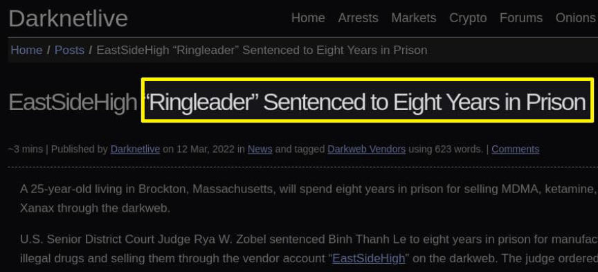
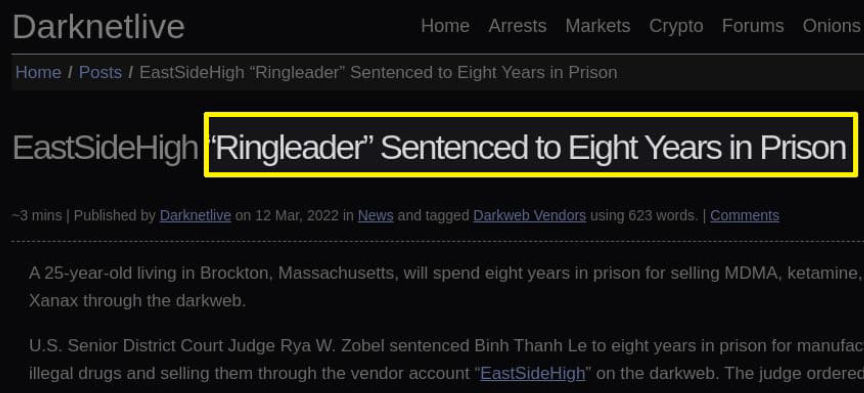

WV Man Sentenced to Prison for Buying Meth on the Darkweb
~2 min read | Published on 2022-07-01, tagged DarkWeb, Drugs, General-News, Sentenced using 454 words.
A federal judge sentenced a West Virginian to ten years in prison for ordering hundreds of grams of methamphetamine on the darkweb.
United States District Judge Irene Berger sentenced Joshua Lee Parsons, 42, of Powellton, to ten years in prison, followed by five years of supervised release for buying methamphetamine on the darkweb. Parsons pleaded guilty in March 2022 to one count of possession with intent to distribute 50 grams or more of methamphetamine.

U.S. Customs and Border Protection (CBP)agents at the John F. Kennedy International Mail Center seized 49 grams of heroin in a package addressed to Parsons in February 2021. On March 1, 2021, CBP agents intercepted another package of drugs addressed to Parsons. It contained 34 grams of MDMA.
On March 8, 2021, law enforcement officers from Homeland Security Investigations, the United States Postal Inspection Service, the West Virginia State Police, and the West Virginia National Guard Reconnaissance and Aerial Interdiction Detachment executed a search warrant at Parson’s residence.
While searching Parsons’ residence, officers seized 66 grams of methamphetamine in 103 bags, 27 grams of heroin, and quantities of MDA, ketamine, LSD, psilocin, and DMT. They also found a Hi-Point .380 ACP pistol and ammunition under the driver’s seat of Parsons’ vehicle.
During questioning, Parsons told officers that he had purchased the methamphetamine and other substances on the darkweb to resell them. He also told officers that he had ordered another package of methamphetamine that had not yet arrived. On March 15, 2021, officers seized the package. Inside it, they found 223 grams of methamphetamine.
In June 2021, a grand jury returned an indictment accusing Parsons of possession with intent to distribute 50 grams or more of methamphetamine, possession of heroin, and being a felon in possession of a firearm.
In a sentencing memorandum, Parsons’ attorney described the previous offenses:
“His offense conduct consisted of breaking into an adult novelty store four different times and first stealing $ 1,745 merchandise, then $ 59,172 in-merchandise, and then twice taking the safe; breaking into a Burger King to steal $ 7,742.23 in merchandise; breaking into a pawn shop to steal three firearms having a combined value of $ 1,049; breaking into a different adult boutique to steal $ 3,300 cash and $5,420 in merchandise; breaking into a Chinese restaurant and stealing $1,103 in property; breaking into the safe of a sports center and stealing $ 2,300 in property.”
the first time, and the entire safe the second time, and breaking into a chiropractic practice stealing property valued at $3,835."
In March 2022, Parsons pleaded guilty to possession with intent to distribute 50 grams or more of methamphetamine. On June 30, 2022, Judge Irene Berger sentenced Parsons to ten years in prison, followed by five years on supervised release.

indictment, plea, judgement
United States District Judge Irene Berger sentenced Joshua Lee Parsons, 42, of Powellton, to ten years in prison, followed by five years of supervised release for buying methamphetamine on the darkweb. Parsons pleaded guilty in March 2022 to one count of possession with intent to distribute 50 grams or more of methamphetamine.
Joshua Lee Parsons
U.S. Customs and Border Protection (CBP)agents at the John F. Kennedy International Mail Center seized 49 grams of heroin in a package addressed to Parsons in February 2021. On March 1, 2021, CBP agents intercepted another package of drugs addressed to Parsons. It contained 34 grams of MDMA.
On March 8, 2021, law enforcement officers from Homeland Security Investigations, the United States Postal Inspection Service, the West Virginia State Police, and the West Virginia National Guard Reconnaissance and Aerial Interdiction Detachment executed a search warrant at Parson’s residence.
While searching Parsons’ residence, officers seized 66 grams of methamphetamine in 103 bags, 27 grams of heroin, and quantities of MDA, ketamine, LSD, psilocin, and DMT. They also found a Hi-Point .380 ACP pistol and ammunition under the driver’s seat of Parsons’ vehicle.
During questioning, Parsons told officers that he had purchased the methamphetamine and other substances on the darkweb to resell them. He also told officers that he had ordered another package of methamphetamine that had not yet arrived. On March 15, 2021, officers seized the package. Inside it, they found 223 grams of methamphetamine.
In June 2021, a grand jury returned an indictment accusing Parsons of possession with intent to distribute 50 grams or more of methamphetamine, possession of heroin, and being a felon in possession of a firearm.
In a sentencing memorandum, Parsons’ attorney described the previous offenses:
“His offense conduct consisted of breaking into an adult novelty store four different times and first stealing $ 1,745 merchandise, then $ 59,172 in-merchandise, and then twice taking the safe; breaking into a Burger King to steal $ 7,742.23 in merchandise; breaking into a pawn shop to steal three firearms having a combined value of $ 1,049; breaking into a different adult boutique to steal $ 3,300 cash and $5,420 in merchandise; breaking into a Chinese restaurant and stealing $1,103 in property; breaking into the safe of a sports center and stealing $ 2,300 in property.”
the first time, and the entire safe the second time, and breaking into a chiropractic practice stealing property valued at $3,835."
In March 2022, Parsons pleaded guilty to possession with intent to distribute 50 grams or more of methamphetamine. On June 30, 2022, Judge Irene Berger sentenced Parsons to ten years in prison, followed by five years on supervised release.

indictment, plea, judgement